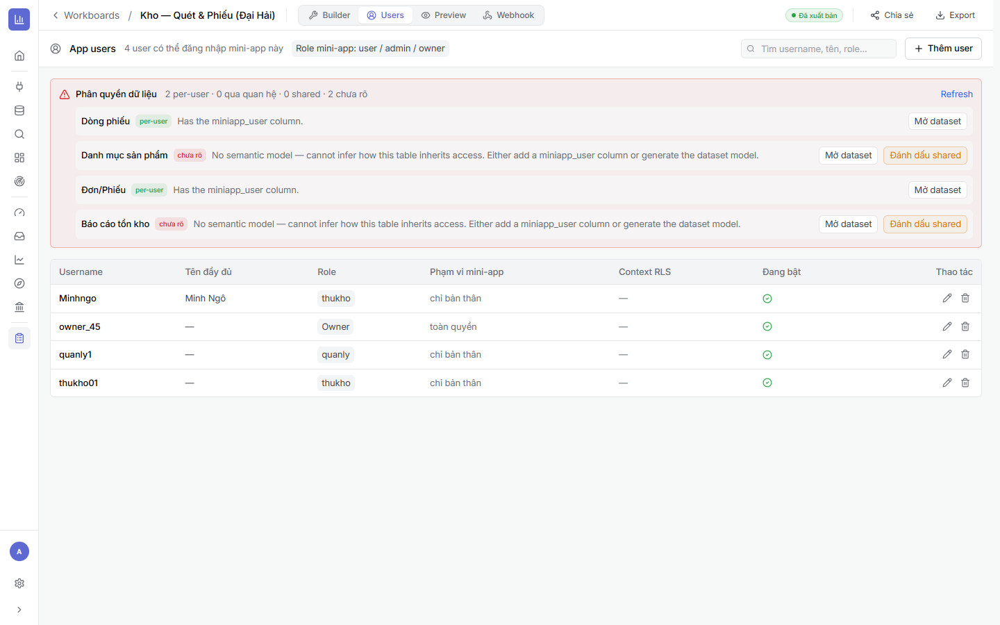

4.1Tạo App Users & vai trò
Là gì: tab Users quản lý những tài khoản có thể đăng nhập vào mini-app này (qua Cổng chia sẻ ở Chương 5).
⚙ Cách làm
- Mở tab Users, bấm + Thêm user.
- Nhập Username, tên đầy đủ, chọn Role mini-app: user / admin / owner (và role nghiệp vụ như thukho, quanly…).
- Chọn Phạm vi mini-app: chỉ bản thân (chỉ thấy dữ liệu của mình) hoặc toàn quyền (owner/quản lý).
- Bật/tắt tài khoản ở cột Đang bật.

4.2Phân quyền dữ liệu theo hàng (RLS)
Là gì: phần Phân quyền dữ liệu cho biết từng bảng thừa kế quyền thế nào. Mỗi bảng rơi vào một trong các trạng thái:
- per-user — bảng có cột miniapp_user → mỗi người chỉ thấy hàng của mình (lọc
miniapp_user = {{app_user.username}}). - shared — bảng dùng chung (danh mục, kho) → mọi người xem như nhau.
- qua quan hệ — thừa kế quyền qua bảng cha đã có model.
- chưa rõ — thiếu cột miniapp_user và chưa có model → cần xử lý.
⚙ Xử lý bảng “chưa rõ”
- Nếu là bảng theo người → Mở dataset, thêm cột miniapp_user (Chương 1).
- Nếu là bảng dùng chung → bấm Đánh dấu shared.
- Hoặc generate dataset model để hệ thống suy quyền qua quan hệ.
- Bấm Refresh để cập nhật lại trạng thái.
Nguyên tắc bảo mật: đừng bàn giao khi còn bảng “chưa rõ” chứa dữ liệu riêng — vì chưa đảm bảo cô lập giữa người dùng. Bảng nào cho xem chung mới đánh dấu shared.
4.3Checklist
- ✅ Đã tạo tài khoản cho từng người dùng thật, đúng role & phạm vi.
- ✅ Bảng theo người = per-user (có miniapp_user); bảng chung = shared.
- ✅ Không còn bảng “chưa rõ” chứa dữ liệu nhạy cảm.
➡️ Tiếp theo: Chương 5 · Xuất bản & Cổng chia sẻ — đưa app cho người dùng thật.
🔗 Liên quan